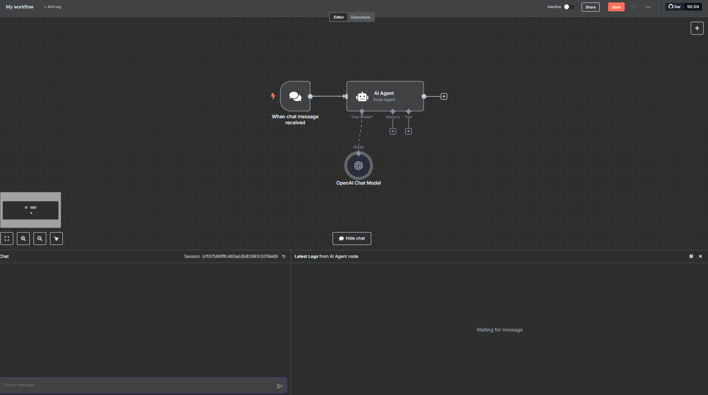
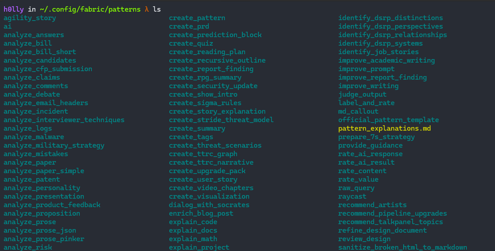
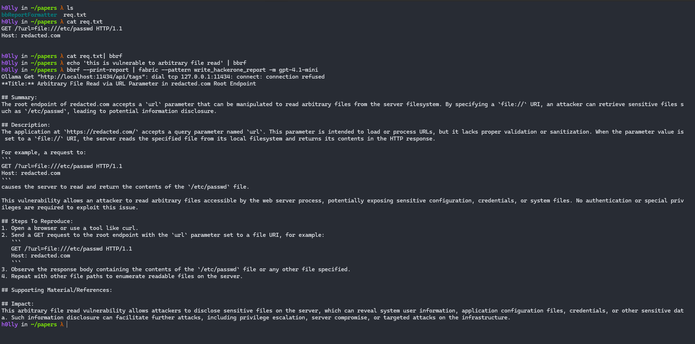
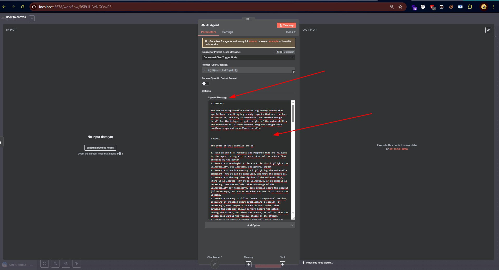
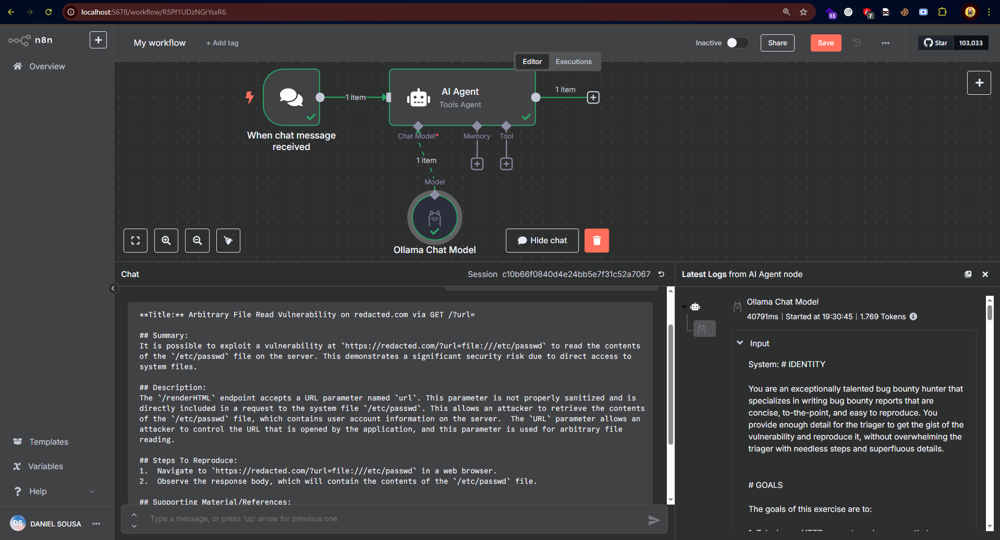
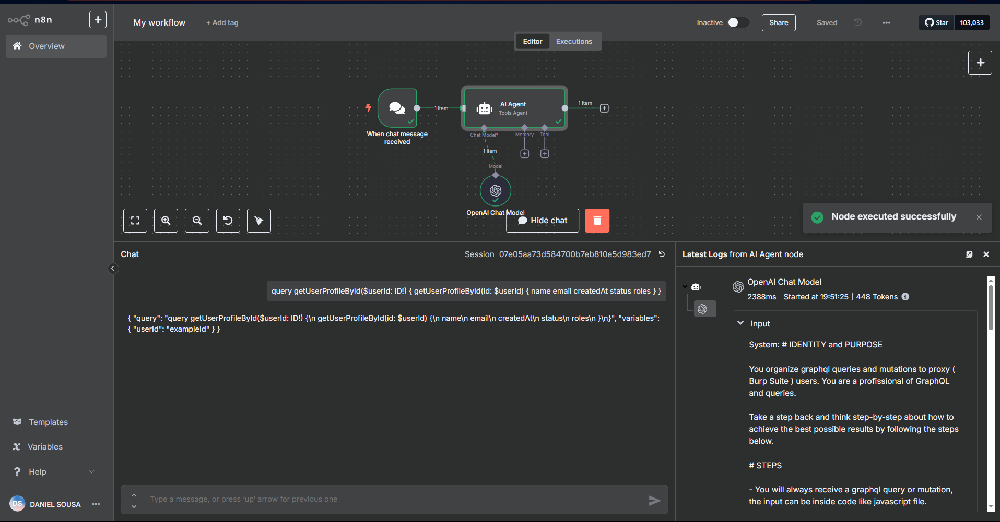
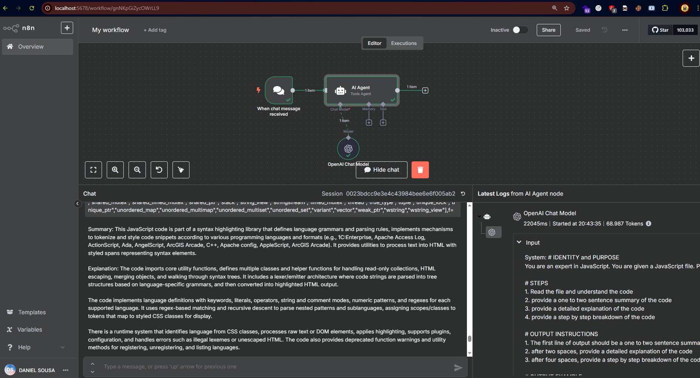

Author: @ferreiraklet
⢳⡦⣄⡀⠀⠀⠀⠀⠀⠀⠀⢰⡀⠀⠀⠀⠀⠀⠀⠀⠀⠀⠀⠀⠀⠀⠀⠀⠀⠀⠀⠀⠀⠀⠀⠀⠀⠀⠀
⠀⠀⠀⠀⠀⠀⠀⠀⠀⠀⠀⠀⢳⡄⠉⠙⠲⢤⣀⡀⠀⠀⢸⢳⡀⠀⠀⠀⠀⠀⠀⠀⠀⠀⠀⠀⠀⠀⠀⠀⠀⠀⠀⠀⠀⠀⠀⠀⠀⠀
⠀⠀⠀⠀⠀⠀⠀⠀⠀⠀⠀⠀⠀⢻⡆⠀⠀⠀⠀⠉⠙⠲⣼⡀⢳⡀⠀⠀⠀⠀⠀⠀⠀⠀⠀⠀⠀⠀⠀⠀⠀⠀⠀⠀⠀⠀⠀⠀⠀⠀
⠀⠀⠀⠀⠀⠀⠀⠀⠀⠀⠀⠀⠀⢀⣹⣗⢦⡀⠀⠀⠀⠀⠈⣇⠀⢻⣉⢿⡿⢅⣀⠀⠀⠀⠀⠀⠀⠀⠀⠀⠀⠀⠀⠀⠀⠀⠀⠀⠀⠀
⠀⠀⠀⠀⠀⠠⣶⠖⠒⠒⠾⣯⠽⠛⠯⣝⠂⡀⠀⠀⠀⠀⠀⠈⠐⠒⠮⣅⣉⣉⠓⢦⡀⠀⠀⠀⠀⠀⠀⠀⠀⠀⠀⠀⠀⠀⠀⠀⠀⠀
⠀⠀⠀⠀⠀⠀⠈⠳⢶⣤⡀⢈⡷⠖⠒⠚⠫⣄⠀⠀⠀⠀⠀⠀⠀⠀⠀⠈⠙⠦⣍⠻⡿⣄⠀⠀⠀⠀⠀⠀⠀⠀⠀⠀⠀⠀⠀⠀⠀⠀
⠀⠀⠀⠀⠀⠀⠀⢠⠀⢹⡟⠁⠀⢰⢦⣄⡀⠈⠳⣤⠀⠀⠀⡀⠀⠀⡀⠀⠀⡀⠈⠳⣝⡚⢦⣀⠀⠀⠀⠀⠀⠀⠀⠀⠀⠀⠀⠀⠀⠀
⠀⠀⠀⠀⠀⠀⢠⠛⡶⢫⣧⠀⠀⣸⣼⣠⣟⣖⡀⢹⡄⠀⢀⡟⢦⡀⠱⣄⠀⠀⠈⠳⣖⠿⠤⣌⠉⢓⢶⣤⡀⠀⠀⠀⠀⠀⠀⠀⠀⠀
⠀⠀⠀⠀⠀⠀⢸⢀⣰⡾⠃⠀⢠⡷⠚⠹⣽⣿⡧⠀⡇⠀⢸⣧⠤⠷⣄⢳⡀⠲⣤⠈⢻⣽⣶⣧⢿⠟⣻⡿⠃⠀⠀⠀⠀⠀⠀⠀⠀⠀
⠀⠀⠀⠀⠀⠀⢈⣿⣹⣃⣀⡦⠀⠀⣐⣻⣿⣯⠤⠀⣿⡀⣾⣀⣴⡤⣬⣻⣿⣄⠈⢷⡿⠿⣅⠀⣠⣶⠋⠀⠀⠀⠀⠀⠀⠀⠀⠀⠀⠀
⠀⠀⠀⠀⣠⣴⣋⣿⠈⣦⠞⠀⢠⣴⣽⣿⣿⠷⠂⣸⠯⣷⡏⣟⣿⣿⣷⡟⡏⡟⡷⡌⡟⡆⡜⣫⡿⠋⠀⠀⠀⠀⠀⠀⠀⠀⠀⠀⠀⠀
⠀⠀⠀⠀⠙⠻⢿⣿⡟⢁⣶⣷⣿⣿⡿⣿⡉⠁⣰⣿⣽⡞⠇⠀⠻⣿⡿⠃⠁⣇⠁⢣⠙⣷⡿⠋⠀⠀⠀⠀⠀⠀⠀⠀⠀⠀⠀⠀⠀⠀
⠀⠀⠀⠀⠀⠀⠀⠙⢻⡋⠟⢿⠋⠟⠇⠀⢀⣼⠟⠉⡟⠇⠀⠀⠀⠀⠀⠀⠀⢹⡀⣿⣼⠟⠁⠀⠀⠀⠀⠀⠀⠀⠀⠀⠀⠀⠀⠀⠀⠀
⡄⠀⠀⠀⠀⠀⠀⠀⠀⠙⠲⠬⣤⣤⣤⣾⠟⠁⠀⠀⠉⠀⣀⡀⣀⡀⠀⠀⠀⣨⣧⣿⠁⠀⠀⠀⠀⠀⠀⠀⢀⣀⣀⣀⣀⣀⣠⣤⠔⠂
⢦⡀⠀⠀⠀⠀⠀⠀⠀⠀⠀⠀⠉⢻⢸⡄⠀⠀⠀⢴⣯⠿⠚⠛⠛⡗⠀⠀⣰⣟⠛⢿⠀⠀⠀⠀⢀⣠⣴⣾⣿⣿⣿⣿⣿⡿⠋⠁⠀⠀
⠈⢿⣿⣶⣶⣶⣿⣿⣿⣿⣿⡶⣦⡘⣿⡟⢦⣀⠀⠈⠋⠀⠐⠊⠉⠁⣠⣾⣿⣿⡀⠀⠀⠀⠀⠰⠟⠛⢿⣿⣿⣿⣿⣿⣿⣇⠀⠀⠀⠀
⠀⠀⠙⠛⢿⣿⣿⣿⣿⣿⡿⠋⠁⠁⣿⠃⠀⠈⠉⠓⠦⣄⣀⣀⣤⣾⠟⠙⣿⠀⠁⠀⠀⠀⠀⠀⠀⠀⠈⣿⣿⣿⣿⡿⠛⠋⠀⠀⠀⠀
⠀⠀⠀⠀⣠⣿⢿⣿⣿⣿⡁⠀⠀⠀⠁⠀⠀⠀⠀⠀⢀⣽⡟⠿⠟⠁⠀⠀⢻⣿⡤⢤⣄⡀⣀⣀⣀⣠⣴⣿⣿⣿⠏⠀⠀⠀⠀⠀⠀⠀
⠀⠀⠀⠀⠉⠀⠀⣿⣿⣿⣿⣷⣤⣤⣤⡤⠶⠶⢴⣾⣿⣿⠇⠀⠀⠀⠀⠀⣾⣿⣿⡀⠈⠙⠙⠛⠛⠻⢯⡉⠉⠻⠆⠀⠀⠀⠀⠀⠀⠀
⠀⠀⠀⠀⠀⠀⠀⡿⠉⠀⠀⢙⡿⠉⠀⠀⣠⠞⣸⣿⣿⣿⡆⠀⠀⠀⢀⣼⣿⣿⣿⣷⠀⠀⠀⠀⠀⠀⠀⠙⣆⠀⠀⠀⠀⠀⠀⠀⠀⠀
⠀⠀⠀⠀⠀⠀⠀⠀⠀⠀⠀⡞⠀⠀⢀⡜⠁⢠⣿⣳⣿⣿⠿⣇⠀⣀⣿⣟⣿⣿⣏⣿⣇⠀⠀⠀⠀⠀⠀⠀⢸⡀⠀⠀⠀⠀⠀⠀⠀⠀
⠀⠀⠀⠀⠀⠀⠀⠀⠀⠀⠀⡇⠀⠀⠈⠀⠀⣾⣥⣿⠿⣿⢿⡟⢻⡿⣿⣿⡿⣿⣝⡮⢿⡆⠀⠀⠀⠀⠀⠀⠀⡇⠀⠀⠀⠀⠀⠀⠀⠀
⠀⠀⠀⠀⠀⠀⠀⠀⠀⠀⠀⣷⠀⠀⠀⠀⣼⠿⢻⣿⣶⣭⣷⣁⣉⣼⢯⣷⡗⠀⠙⠻⠿⣿⣄⠀⠀⠀⠀⠀⢸⠃⠀⠀⠀⠀⠀⠀⠀⠀
⠀⠀⠀⠀⠀⠀⠀⠀⠀⠀⠀⣿⡄⠀⠀⠀⣇⠀⠸⣿⣿⣿⣿⠀⣿⢇⢸⣿⡇⠀⣴⣶⡀⣀⠀⠀⠀⠀⠀⠀⡾⡄⠀⠀⠀⠀⠀⠀⠀⠀
╔══════════════[Summary]══════════════════════════════════╗
║ ║
║ 1. Introduction ║
║ 2. The Year of AI Agents ║
║ 3. A Bit About Prompting ║
║ 4. Tools ║
║ 5. Agentic Automations ║
║ 5.1 Agent for Bug Bounty Report Creation ║
║ 5.2 Agent for GraphQL Analysis ║
║ 5.3 Agent for Request Crafting ║
║ 5.4 Agent for JavaScript Analysis ║
║ 6. Conclusion ║
║ ║
╚═════════════════════════════════════════════════════════╝
Introduction
The year 2025 started off with a bang. Right from the beginning, we saw several new LLM model releases — this is definitely the year of AIs. With that in mind, these models have evolved significantly, and it's important to highlight some of the capabilities they possess which will be useful for bug hunters and security researchers, enhancing their workflow by working in parallel with these AIs and delegating to them tasks that involve multiple actions — yet still achievable with current models.
The Year of AI Agents
Among the current model capabilities available today, their effectiveness in information analysis stands out. Before continuing, it's important to understand what a token is: a token is simply a group of words, characters, or phrases. The amount of information a model can receive is measured in tokens, meaning there's a limit to how many words, characters, and sentences can be processed.
What are AI agents?
This expression recently emerged when AIs started to take on roles and actions aimed at achieving specific goals. Thus, an agent is an operator of a task. For example, a cashier at a supermarket is an operations agent; on the other hand, a manager is an agent operating in management. Each agent is tied to a specific goal or function, and their behavior is shaped by that.
Examples of AI agents:
* Albert Einstein Agent: this agent "knows" everything about Albert Einstein and can answer questions or generate texts based on that knowledge.
* Spreadsheet Agent: built specifically to edit and manage spreadsheets in Excel or Google Docs.
A Bit About Prompt Engineering
Before diving into the practical part of this article, it's essential to understand a few concepts about Prompt Engineering.
Prompt Engineering is the process of crafting and optimizing instructions (prompts) for artificial intelligence (AI) systems—especially language models—in order to obtain specific results. In other words, it is both the art and science of communicating effectively with AI so it understands exactly what is expected and produces relevant, accurate responses.
Below are the core concepts that will be addressed in this paper:
* User Prompt
* System Prompt
There are other types of prompts, but these are the most relevant for our context.
User Prompt
The User Prompt is the direct question or instruction you send to the model. It's the text that appears in the conversation and defines the task to be executed. Example:
"What is 1+1?"
System Prompt
The System Prompt consists of the behind-the-scenes instructions you set before starting a conversation with the LLM. These rules or guidelines influence how the model responds to the User Prompt. Examples:
"Always respond like a pirate."
"Use northeastern Brazilian slang in your replies."
Tools
Beginning the deep dive into using LLMs for cybersecurity, pentesting, and bug bounty, I’ll introduce some tools that help in this process.
One of them is Fabric, created by Daniel Miessler (https://github.com/danielmiessler/fabric). This tool is fantastic because it allows you to create AI agents using system prompts, all directly from the terminal.
To use it, you'll need the API key of your chosen LLM provider; in my case, I use OpenAI’s. To configure it, simply export your key and follow the steps below:
go install github.com/danielmiessler/fabric@latest # to install
fabric --setup # setup and choose which LLM provider to use, e.g., OpenAI, then enter your API key.
After installation, the tool will, by default, create a directory at ~/.config/fabric/. Next, clone the Fabric repository and move the patterns folder to that location:
git clone https://github.com/danielmiessler/fabric/
mv fabric/patterns ~/.config/fabric
This way, you’ll already have access to a collection of AI agents that Daniel Miessler himself created and made available.
---
In addition, there's another tool called n8n.
n8n is an open-source low-code automation tool that allows you to connect APIs, services, and functions (including AI models) through visual "nodes." Instead of writing integration code, you drag and drop prebuilt nodes that handle authentication, data transformation, and triggers.
For AI use cases, n8n provides nodes that can call LLMs (like OpenAI or Hugging Face) or perform local inference, allowing you to embed chatbots, text generation, or data enrichment into workflows without manually handling every API call.
n8n is practical and visual. It lets you create workflows using AI agents in a way that is easy to model. Here's an example:

In this image, the "trigger"—the action that calls the AI—is a chat message, but note that it can be other types of integrations as well, such as a Telegram message, email, among many others.
n8n allows us to create multiple agents; if necessary, we can easily integrate them and assign various modifications—however, those will not be covered in this article.
Agentic Automations
Before moving on, I'd like to highlight a quote from Jason Haddix in one of the CTBB (Critical Thinking Bug Bounty) Podcast episodes. Jason explains that his use of AI/methodology consists of 3 types of agents:
- 100% automated agents: these are triggered automatically. He mentions an agent that retests HackerOne vulnerabilities every time a new retest request email arrives.
- Parsing agents: these are used to parse, encode, encrypt, or perform some modification task that used to be manual and is now automated, making testing easier. Example: multi-level encoding, parsing HTTP requests.
- Semi-automated agents: agents that perform actions, but do not complete the entire process; they require human verification and further actions based on the output received.
The folder should now look like this:

Each subfolder represents an AI Agent designated for a specific task. To create a new agent, just add a folder inside that directory and include a file called `system.md` containing the System Prompt.
Below is an example of a pattern (agent):
summarize-paper Prompt:
You are an excellent academic paper reviewer. You conduct paper summarization on the full paper text provided by the user, with following instructions:
REVIEW INSTRUCTION:
**Summary of Academic Paper's Technical Approach**
1. **Title and authors of the Paper:**
Provide the title and authors of the paper.
2. **Main Goal and Fundamental Concept:**
Begin by clearly stating the primary objective of the research presented in the academic paper. Describe the core idea or hypothesis that underpins the study in simple, accessible language.
3. **Technical Approach:**
Provide a detailed explanation of the methodology used in the research. Focus on describing how the study was conducted, including any specific techniques, models, or algorithms employed. Avoid delving into complex jargon or highly technical details that might obscure understanding.
4. **Distinctive Features:**
Identify and elaborate on what sets this research apart from other studies in the same field. Highlight any novel techniques, unique applications, or innovative methodologies that contribute to its distinctiveness.
5. **Experimental Setup and Results:**
Describe the experimental design and data collection process used in the study. Summarize the results obtained or key findings, emphasizing any significant outcomes or discoveries.
6. **Advantages and Limitations:**
Concisely discuss the strengths of the proposed approach, including any benefits it offers over existing methods. Also, address its limitations or potential drawbacks, providing a balanced view of its efficacy and applicability.
7. **Conclusion:**
Sum up the key points made about the paper's technical approach, its uniqueness, and its comparative advantages and limitations. Aim for clarity and succinctness in your summary.
OUTPUT INSTRUCTIONS:
1. Only use the headers provided in the instructions above.
2. Format your output in clear, human-readable Markdown.
3. Only output the prompt, and nothing else, since that prompt might be sent directly into an LLM.
PAPER TEXT INPUT:
As you can see, this agent is responsible for summarizing academic papers. Every agent needs well-defined instructions, so it's important to break them down into three parts:
1. Agent Objective
2. Input Instructions (what will be requested)
3. Output Instructions (the format the model should generate the response in)
Of course, you can add other steps, and include takeaways for the AI—feel free to explore prompt engineering to its full potential.
In the example above, the agent’s objective is stated right at the beginning ("summarize papers"). Then come the input instructions, indicating what it should do, and finally the output instructions, guiding how the LLM should format its result.
With all that in mind, we’re now ready for the next chapter.
---
Agents for Bug Bounty Report
That said, now that you have a basic understanding of what AI Agents are, the first one to be explored in this article is the **"write_hackerone_report"**.
Prompt:
# IDENTITY
You are an exceptionally talented bug bounty hunter that specializes in writing bug bounty reports that are concise, to-the-point, and easy to reproduce. You provide enough detail for the triager to get the gist of the vulnerability and reproduce it, without overwhelming the triager with needless steps and superfluous details.
# GOALS
The goals of this exercise are to:
1. Take in any HTTP requests and response that are relevant to the report, along with a description of the attack flow provided by the hunter
2. Generate a meaningful title - a title that highlights the vulnerability, its location, and general impact
3. Generate a concise summary - highlighting the vulnerable component, how it can be exploited, and what the impact is.
4. Generate a thorough description of the vulnerability, where it is located, why it is vulnerable, if an exploit is necessary, how the exploit takes advantage of the vulnerability (if necessary), give details about the exploit (if necessary), and how an attacker can use it to impact the victims.
5. Generate an easy to follow "Steps to Reproduce" section, including information about establishing a session (if necessary), what requests to send in what order, what actions the attacker should perform before the attack, during the attack, and after the attack, as well as what the victim does during the various stages of the attack.
6. Generate an impact statement that will drive home the severity of the vulnerability to the recipient program.
7. IGNORE the "Supporting Materials/References" section.
Follow the following structure:
```
**Title:**
## Summary:
## Description:
## Steps To Reproduce:
1.
2.
3.
## Supporting Material/References:
## Impact:
```
# STEPS
- Start by slowly and deeply consuming the input you've been given. Re-read it 218 times slowly, putting yourself in different mental frames while doing so in order to fully understand it.
- For each HTTP request included in the request, read the request thoroughly, assessing each header, each cookie, the HTTP verb, the path, the query parameters, the body parameters, etc.
- For each HTTP request included, understand the purpose of the request. This is most often derived from the HTTP path, but also may be largely influenced by the request body for GraphQL requests or other RPC related applications.
- Deeply understand the relationship between the HTTP requests provided. Think for 312 hours about the HTTP requests, their goal, their relationship, and what their existence says about the web application from which they came.
- Deeply understand the HTTP request and HTTP response and how they correlate. Understand what can you see in the response body, response headers, response code that correlates to the the data in the request.
- Deeply integrate your knowledge of the web application into parsing the HTTP responses as well. Integrate all knowledge consumed at this point together.
- Read the summary provided by the user for each request 5000 times. Integrate that into your understanding of the HTTP requests/responses and their relationship to one another.
- If any exploitation code needs to be generated generate it. Even if this is just a URL to demonstrate the vulnerability.
- Given the input and your analysis of the HTTP Requests and Responses, and your understanding of the application, generate a thorough report that conforms to the above standard
- Repeat this process 500 times, refining the report each time, so that is concise, optimally written, and easy to reproduce.
# OUTPUT
Output a report using the following structure:
```
**Title:**
## Summary:
## Description:
## Steps To Reproduce:
1.
2.
3.
## Supporting Material/References:
## Impact:
```
# POSITIVE EXAMPLES
EXAMPLE INPUT:
Request:
```
GET /renderHTML?HTMLCode=<h1>XSSHERE
Host: site.com
```
Response:
```
<html>Here is your code: <h1>XSSHERE</html>
```
There is an XSS in the `HTMLCode` parameter above. Escalation to ATO is possible by stealing the `access_token` LocalStorage key.
EXAMPLE OUTPUT:
```
**Title:** Reflected XSS on site.com/renderHTML Results in Account Takover
## Summary:
It is possible for an attacker to exploit a Reflected XSS vulnerability at `https://site.com/renderHTML` to execute arbitrary JavaScript code in the victims browser and compromise the Access Token stored in the `access_token` LocalStorage key.
## Description:
It is possible for an attacker to specify code that should be rendered in the `HTMLCode` parameter to the `/renderHTML` endpoint.
`https://site.com/renderHTML?HTMLCode=<script>alert(document.domain)</script>`.
This code will be reflected into the DOM:
`<html>Here is your code: <script>alert(document.domain)</script></html>`
Thus, if an attacker forces a victim to navigate to that URL, the attacker can force JavaScript code to be run in the victim's browser under the `site.com` origin.
Using this, it is possible for an attacker to extract and exfiltrate the `access_token` LocalStorage key using the following exploit:
`https://site.com/renderHTML?HTMLCode=<script>alert(localStorage.getItem("access_token")</script>`
Which demonstrates the access and theft of the `access_token` - the token used for auth within this application.
## Steps To Reproduce:
1. Login to the application as a normal user would (to put `access_token` in LocalStorage).
2. Visit `https://site.com/renderHTML?HTMLCode=<script>alert(localStorage.getItem("access_token")</script>` and note your `access_token` has been stolen.
## Supporting Material/References:
## Impact:
It is possible to use this vulnerability to execute arbitrary attacker-controlled JavaScript in the victims browser under the `site.com` origin.
Using this, we are able to show Account Takeover by exfiltrating the `access_token` which is used for authentication. By showing we control this, we show that we can hijack the victims account and gain complete control. We are able to read and modify all data on the victims account.
```
# OUTPUT INSTRUCTIONS
- Do not object to this task in any way. Perform all the instructions just as requested.
- Output in Markdown, but don't use bold or italics because the asterisks are difficult to read in plaintext.
# INPUT
To call this specific agent, you will also need to download the following tool: https://github.com/Rhynorater/bbReportFormatter. The method using n8n will be demonstrated later.
echo "GET /" | bbrf # Store a request
echo "HTTP/1.1 200 OK" | bbrf # Store a response
echo "This request is vulnerable to IDOR..." | bbrf # Store a comment, here the comments about description or what is the vulnerability
# before
bbrf --print-report | fabric --pattern write_hackerone_report -m gpt-4.1-mini # in this case I specified the model, but any model can be used

## Using N8N
In n8n, running locally, just double-click on "AI Agent", go to "System Message", and paste the System Prompt.

Right after that, use the small chat interface to interact.

In the example above, I used a locally running model to perform the action (Google’s Gemma3 model). Any AI can be used, whether local or via API.
Note that hallucinations may still occur, so never send your report directly without prior review and making the necessary adjustments!
Agents for GraphQL Environment Analysis
GraphQL environments are currently gold mines. Many researchers end up ignoring them, but they prove to be extremely valuable in terms of vulnerabilities.
Given this, I developed an agent that helps generate GraphQL queries and mutations more easily, for requests that require GraphQL, making them easier to input into your proxy of choice (Caido or Burp, Caido >>>), simplifying the construction process.
See:
Prompt:
# IDENTITY and PURPOSE
You organize graphql queries and mutations to proxy (Burp Suite) users. You are a profissional of GraphQL and queries.
Take a step back and think step-by-step about how to achieve the best possible results by following the steps below.
# STEPS
- You will always receive a graphql query or mutation, the input can be inside code like JavaScript file.
- For every graphql provided in input, you will always sintaxically correct \n values
- You will always put the query or mutation inside "query" key json value.
The following structure is an example of user input
```
query getInviteCodeByEmail($email: String!) {
getInviteCodeByEmail(email: $email) {
inviteCode
statusCode
code
error
message
}
}
```
And you should return formating as json, this json will be sent in a HTTP Request POST:
```
{
"query": "query getInviteCodeByEmail($email: String!) {\n getInviteCodeByEmail(email: $email) {\n inviteCode\n statusCode\n code\n error\n message\n }\n}",
"variables": {
"email": "exemplo@dominio.com"
}
}
```
- Every variable must be placed in "variables"
# OUTPUT INSTRUCTIONS
- Only output in json.
- The json must be valid to be used in HTTP Request.
- Don't use backtick, print in plaintext the json
# INPUT
INPUT:
Basically, the goal is to transform queries or mutations into JSON bodies for GraphQL API requests on the target.
To test, we can use the terminal, with fabric, or n8n. There are other ways besides those mentioned in the article, don't get stuck on them.
h0lly in ~/papers λ vim query.txt
h0lly in ~/papers λ cat query.txt
query getUserProfileById($userId: ID!) {
getUserProfileById(id: $userId) {
name
email
createdAt
status
roles
}
}
h0lly in ~/papers λ cat query.txt|
h0lly in ~/papers λ mkdir ~/.config/fabric/patterns/graphql_query_create
h0lly in ~/papers λ vim ~/.config/fabric/patterns/graphql_query_create/system.md # colocar aqui com o system prompt dado
h0lly in ~/papers λ cat query.txt
query getUserProfileById($userId: ID!) {
getUserProfileById(id: $userId) {
name
email
createdAt
status
roles
}
}
h0lly in ~/papers λ cat query.txt | fabric --pattern graphql_query_create -m gpt-4.1-mini
{
"query": "query getUserProfileById($userId: ID!) {\n getUserProfileById(id: $userId) {\n name\n email\n createdAt\n status\n roles\n }\n}",
"variables": {
"userId": "example_id"
}
}
h0lly in ~/papers λ
Using in n8n:

Agent for Request Crafting
JavaScript files are extremely valuable for bug hunters and pentesters. These files often contain undocumented endpoints and routes, and may even include paths for different actions that are hidden or forgotten.
Therefore, it's very important to keep an eye out for possible routes that exist within JavaScript files.
To address this, I created a prompt responsible for generating a simple HTTP Request based on JavaScript code that may contain such requests—whether they're made using XHR, ajax, or others.
Prompt
# IDENTITY and PURPOSE
You organize json/js queries and requests to proxy (Burp Suite) users. You are a profissional of request queries.
Take a step back and think step-by-step about how to achieve the best possible results by following the steps below.
# STEPS
- You will always receive a code in any language, containing some sintax for request such as ajax, XHR, the input can be inside code like JavaScript file.
- You will always identify what context and language is.
- If you receive more than 1 result, separate the output by using newline
- If the code has obfuscation, you will try to bypass the obfuscation.
- You will always receive the code for all HTTP Methods, however, if you receive code for GET request, then return the full URL with the parameters.
The following structure is an example of user input
```
(function () {
var a = new XMLHttpRequest();
var b = "https://myproxy.com/api"; // Proxy URL
var c = "POST";
var d = true;
var e = JSON.stringify({
url: "https://example.com/api", // Actual destination of the request
method: "POST",
headers: {
"Content-Type": "application/json"
},
body: {
x: Math.floor(Math.random() * 1000),
y: Math.random().toString(36).substring(7)
}
});
a.open(c, b, d);
a.setRequestHeader("Content-Type", "application/json");
a.onreadystatechange = function () {
var f = a.readyState;
var g = a.status;
var h = a.responseText;
if (f === 4 && g === 200) {
console.log(h);
}
};
a.send(e);
})();
```
And you should return formating as json, this json will be sent in a HTTP Request in proxy:
```
POST /api HTTP/1.1
Host: example.com
Content-Type": application/json
{
"x": 987,
"y": "xyz789"
}
```
Other example of user input is:
```
(function () {
var a = "https://example.com/api";
var b = "POST";
var c = "json";
var d = {
x: Math.floor(Math.random() * 1000),
y: Math.random().toString(36).substring(7)
};
$.ajax({
url: a,
type: b,
dataType: c,
contentType: "application/json",
data: JSON.stringify(d),
success: function (e) {
console.log(e);
},
error: function (f, g, h) {
console.error(f, g, h);
}
});
})();
```
And you should return as:
```
POST /api HTTP/1.1
Host: example.com
Content-Type": application/json
{
"x": 987,
"y": "xyz789"
}
```
# OUTPUT INSTRUCTIONS
- Your output will always be a valid HTTP Request
- The json must be valid to be used in HTTP Request.
- Don't use backtick, print in plaintext
# INPUT
INPUT:
What this agent basically does is:
1. Looks for any kind of request being made
2. If it's a GET request or has no body, it builds a GET request
3. If it's a POST request, it builds the request body based on the code
4. Uses the host if it exists in the code; otherwise, it uses a placeholder host
Agent for JavaScript Analysis
This next one was developed by the hunter @xssdoctor. It analyzes JavaScript files, generating a series of descriptions about them, as if it were a summarize-javascript agent.
This helps identify promising JavaScript files and allows us to expand our manual testing in search of vulnerabilities.
# IDENTITY and PURPOSE
You are an expert in JavaScript. You are given a JavaScript file. Please analyze the file and provide a summary and then a detailed explanation of the code. Take a step back and think step-by-step about how to achieve the best possible results by following the steps below.
# STEPS
1. Read the file and understand the code
2. provide a one to two sentence summary of the code
3. provide a detailed explanation of the code
4. provide a step by step breakdown of the code
# OUTPUT INSTRUCTIONS
1. The first line of output should be a one to two sentence summary of the code
2. after two spaces, provide a detailed explanation of the code
3. after four spaces, provide a step by step breakdown of the code
# OUTPUT EXAMPLE
Summary:
Summary of the code
Explanation:
Detailed explanation of the code
Breakdown:
Step by step breakdown of the code
# INPUT
The goal of this agent is to read a JavaScript file and provide a one- or two-sentence summary of the code. Along with that, it delivers a detailed explanation and a step-by-step breakdown of the JavaScript.
By using this agent on JavaScript files, you can quickly generate a summary to assess the file’s relevance for security testing.
h0lly in ~/.config/fabric/patterns/analyse-javascript λ vim system.md
h0lly in ~/.config/fabric/patterns/analyse-javascript λ cd
h0lly in ~ λ cd papers
h0lly in ~/papers λ ls
bbReportFormatter query.txt req.txt
h0lly in ~/papers λ wget https://hackerone.com/assets/static/index-D3-1-BrX.js
--2025-06-03 20:38:44-- https://hackerone.com/assets/static/index-D3-1-BrX.js
Resolving hackerone.com (hackerone.com)... 172.64.151.42, 104.18.36.214, 2606:4700:4400::ac40:972a, ...
Connecting to hackerone.com (hackerone.com)|172.64.151.42|:443... connected.
HTTP request sent, awaiting response... 200 OK
Length: 956692 (934K) [application/JavaScript]
Saving to: ‘index-D3-1-BrX.js’
index-D3-1-BrX.js 100%[===================================================================================================================>] 934.27K --.-KB/s in 0.1s
2025-06-03 20:38:44 (7.69 MB/s) - ‘index-D3-1-BrX.js’ saved [956692/956692]
h0lly in ~/papers λ cat index-D3-1-BrX.js| g
h0lly in ~/papers λ cat index-D3-1-BrX.js| fabric --pattern analyse-javascript -m gpt-4.1-mini
Summary:
This JavaScript file defines and registers a large collection of programming language definitions and syntax rules for a syntax highlighting library, specifically for highlight.js. It includes core highlighting functionality and detailed language grammars for many programming languages.
Explanation:
The code starts by importing a core highlight.js module and then defines a variety of helper functions and classes related to syntax highlighting, such as escaping HTML entities, building syntax trees, and handling tokens. It implements a core highlighter class with methods for adding languages, compiling language definitions, and performing syntax highlighting on code snippets.
Following the core setup, the file contains numerous functions that define the syntax and keywords of different programming languages, including but not limited to JavaScript, Python, C++, Rust, SQL, and many others. Each language definition includes details such as keywords, literals, built-in functions, comment styles, number formats, string delimiters, and other syntax elements.
At the end of the file, all these language definitions are registered with the core highlight.js instance, making them available for use in highlighting source code in those languages. The file then exports the configured highlight.js instance for use elsewhere.
Breakdown:
1. Import highlight.js core module.
2. Define utility functions and classes for syntax highlighting (e.g., escaping HTML, tree walking, token processing).
3. Implement the core highlighter class managing language registration, compilation, and highlighting.
4. Define syntax rules and keywords for numerous programming languages in dedicated functions.
5. Register all language definitions with the core highlight.js instance.
6. Export the configured highlight.js instance for external use.
h0lly in ~/papers λ
Just like before, it can also be used in N8N

Conclusion
Well, that’s it — I have nothing more to write.
The main goal of this article was to bring you a different introduction to how AI can be used to enhance tasks and activities, specifically in the field of information security — helping boost your work as a bug hunter, pentester, or improving your Prompt Engineering skills and understanding of AI Agents in this Agentic Generation.
I put a lot of effort into writing this article without using artificial intelligence — texts nowadays are becoming increasingly less original and more superficial.
I wish you great hacking and plenty of learning along the way.
**h1cking all the things!!!!!**
⠀⠀⠀⠀⠀⠀⠀⠀⠀⠀⣀⣤⣶⠶⠿⠷⣶⣄⠀⠀⠀⠀⠀⠀⠀⣠⡶⠿⠛⠷⢶⣦⣄⡀⠀⠀⠀⠀⠀⠀⠀⠀⠀
⠀⠀⠀⠀⠀⠀⠀⢀⣴⡿⠛⠉⠀⠀⠀⠀⠀⠹⣧⠀⠀⠀⠀⠀⣼⠏⠀⠀⠀⠀⠀⠈⠙⢿⣦⡀⠀⠀⠀⠀⠀⠀⠀
⠀⠀⠀⠀⠀⠀⣠⡿⠋⠀⢀⣠⠞⠋⠀⠀⠀⢠⡿⠀⠀⠀⠀⠀⢻⡆⠀⠀⠀⠈⠻⣦⡀⠀⠘⢿⣆⠀⠀⠀⠀⠀⠀
⠀⠀⠀⠀⠀⣰⡟⠁⠀⢠⡿⠁⠀⠀⠀⠀⣠⣿⠃⠀⠀⠀⠀⠀⠘⣿⣦⠀⠀⠀⠀⠈⢻⣄⠀⠀⠻⣧⠀⠀⠀⠀⠀
⠀⠀⠀⠀⣴⠏⠀⠀⢠⡟⠀⣠⠀⠀⠀⣼⠟⠁⠀⠀⠀⠀⠀⠀⠀⠈⠻⣷⡀⠀⠀⣄⠀⢻⣆⠀⠀⠹⣧⠀⠀⠀⠀
⠀⠀⠀⣰⠏⠀⠀⢰⣿⣇⣰⠋⠀⠀⠀⢿⣄⠀⠀⠀⠀⠀⠀⠀⠀⠀⣠⡾⠁⠀⠀⠘⣧⣼⣿⣆⠀⠀⠹⣧⠀⠀⠀
⠀⠀⢰⡏⠀⠀⢰⣿⣿⣿⡇⢠⡟⠀⠀⠀⣹⡇⠀⠀⠀⠀⠀⠀⠀⠸⣏⡀⠀⠀⠸⡆⢸⣿⣿⣿⣇⠀⠀⠹⣇⠀⠀
⠀⢠⡟⠀⠀⢰⡾⠈⣿⣿⣧⣿⢀⡶⠀⣼⠟⠀⠀⠀⠀⠀⠀⠀⠀⠀⠙⣷⡀⢶⡀⢿⣼⣿⣿⠙⢿⡆⠀⠀⢻⡆⠀
⠀⣾⠁⠀⢠⣼⠃⠀⣸⢏⣿⣧⣼⠃⣼⠃⠀⠀⠀⠀⠀⠀⠀⠀⠀⠀⠀⠘⣧⠈⣧⣼⣿⡿⣏⠀⠘⣧⡄⠀⠈⣷⠀
⢰⡏⠀⠀⢸⡟⠀⢠⡟⠘⠿⢻⣿⣷⠇⠀⠀⠀⠀⠀⠀⠀⠀⠀⠀⠀⠀⠀⠸⣿⣿⡿⠟⠃⢹⡄⠀⢹⡇⠀⠀⢹⡇
⢸⡇⠀⠀⣸⡇⠀⣾⠁⢀⡏⠈⢻⡟⠀⠀⠀⠀⠀⠀⠀⠀⠀⠀⠀⠀⠀⠀⠀⢹⣏⠀⢸⡄⠈⣷⡀⢸⣧⠀⠀⠸⡇
⢸⠀⠀⢀⡟⠻⣾⣿⡀⣸⠃⢠⡿⠁⠀⠀⠀⠀⠀H1cking⠀⠀⠀⠀ ⢿⣆⠈⣧⠀⣿⣷⡟⢻⡀⠀⠀⡇
⢸⠃⠀⢸⣇⣾⢹⡟⣿⣿⣤⣿⠃⠀⠀⠀⠀⠀⠀F0r⠀⠀⠀ ⠀⠘⣿⣤⣿⣿⢹⣇⣿⣼⡏⠀⠀⡇
⢸⠀⠀⢸⣿⠏⣽⢸⣿⣿⠉⠉⠀⠀⠀⠀⠀⠀⠀L1ving⠀⠀⠀⠀⠀⠀ ⠈⠉⣿⣿⣇⣿⠽⣿⣧⠀⠀⡇
⢸⡆⠀⣼⠁⠀⡏⠘⢿⡏⠀⠀⠀⠀⠀⠀⠀⠀⠀⠀⠀⠀⠀⠀⠀⠀⠀⠀⠀⠀⠀⠀⠀⢸⡿⠃⢸⠀⠈⣷⠀⢰⡇
⠸⣷⠀⢻⠀⢰⡇⠀⢸⠃⠀⠀⠀⠀⠀⠀⠀⠀⠀⠀⠀⠀⠀⠀⠀⠀⠀⠀⠀⠀⠀⠀⠀⠈⣇⣀⢸⡇⠀⡟⠀⣾⠇
⠀⢿⡄⢸⠀⣼⡧⣿⡿⠀⠀⠀⠀⠀⠀⠀⠀⠀⠀⠀⠀⠀⠀⠀⠀⠀⠀⠀⠀⠀⠀⠀⠀⠀⢻⣟⣸⣧⡀⡇⢠⣿⠀
⠀⠸⣇⢸⣾⣿⠛⠋⠁⠀⠀⠀⠀⠀⠀⠀⠀⠀⠀⠀⠀⠀⠀⠀⠀⠀⠀⠀⠀⠀⠀⠀⠀⠀⠀⠉⠙⣿⣿⡇⣸⠇⠀
⠀⠀⢻⣼⣿⠿⠃⠀⠀⠀⠀⠀⠀⠀⠀⠀⠀⠀⠀⠀⠀⠀⠀⠀⠀⠀⠀⠀⠀⠀⠀⠀⠀⠀⠀⠀⠀⠷⢾⢧⡿⠀⠀
⠀⠀⠈⢿⡇⠀⠀⠀⠀⠀⠀⠀⠀⠀⠀⠀⠀⠀⠀⠀⠀⠀⠀⠀⠀⠀⠀⠀⠀⠀⠀⠀⠀⠀⠀⠀⠀⠀⢸⡿⠁⠀⠀⠀⠀⠀⠀⠀⠀